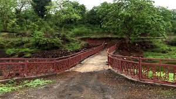
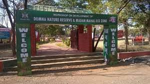

The Dumna Nature Reserve (DNR) of Jabalpur Municipal Corporation is spread over nearly 1800 acres of forested land on a plateau, about 40 meters above Jabalpur town.
This forest is a dry deciduous type, typical of central Indian mixed forests. It is home to many species of native trees, plants, shrubs, herbs, creepers, climbers, and grasses.
It is an ecotourism site open to the public located in the Jabalpur district of the Indian state of Madhya Pradesh.
Price: The entry for adults into the Dumna Nature Reserve Park is INR 20.
Timing: Dumna Nature Reserve Park opens at 10:30 AM and closes at 6:30 PM.
Best Time to Visit: Dumna National Reserve Park remains flourishing all over the year. Tourists love to spend time in a calm and peaceful environment in the middle of various flora and fauna.
